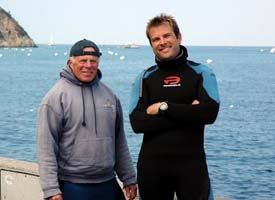

Ron Moore and Chad Stone
 Click logo to visit NAUI's official site.
Click logo to visit NAUI's official site.
About Us
Meet the Head Instructor!
Ron has been diving Southern California waters for over 30 years. Trained in both PADI and NAUI scuba diving standards, Ron's vast experience and knowledge in diving will become apparent the instant you meet.
After Divemastering for a number of years on Catalina Island, Ron founded his own Dive Shop which allows him to set high standards for customer satisfaction and safety. Ron connects with each diver on a personal level to ensure they have the best experience Catalina has to offer.
Ron's shop, Dive Catalina, is the only facility in Avalon offering guided dives and scuba instruction through the National Association of Underwater Instructors (NAUI).
© Chad Stone - Stone Divers